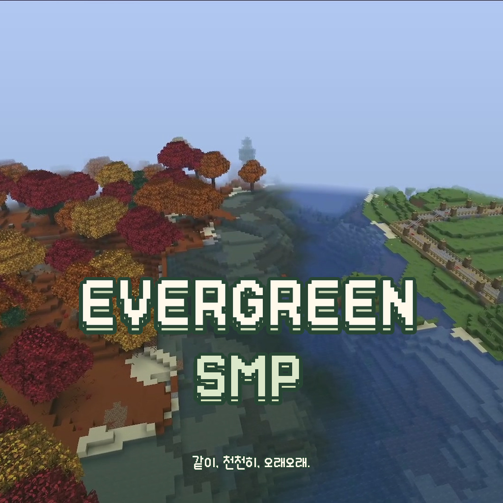

01 OUR GROWING WORLD
오늘도, 자라는 세계.
작은 발자국이 모여
우리만의 풍경이 돼요.
EVERGREEN ATLAS지도 연결 중
NOW EXPLORING오버월드마을과 지형을 기다리고 있어요
마을 영역플레이어 · 16×16블록저장된 지형을 표시해요
지형은 월드 저장 후 반영돼요.위치 정보를 확인 중이에요.
02 TOGETHER, RIGHT NOW
지금, 이곳에
함께 있어요.
—명PLAYERS ONLINE
서버의 접속 정보를 확인하고 있어요.
약 5초마다 접속 정보를 확인해요
오늘의 이웃들EVERGREEN COMMUNITY
새로운 발자국을 기다려요.
잠시 후 접속 정보가 여기에 나타나요.
각자의 모험이 만나, 우리의 이야기가 됩니다.
EVERGREEN SMPOFFICIAL FILM

잠시 후 영상이 시작돼요.같이, 천천히, 오래오래.재생을 준비하고 있어요
04 OUR STORY, STILL GROWING
첫 가동 후 함께한 시간
하루하루 쌓이는,
우리의 에버그린.
SINCE 2026.10.10 STILL GROWING
00개월MONTHS
00일DAYS
00시간HOURS
00분MINUTES
00초SECONDS
첫 정상 기동 기록부터 흐른 시간이에요.
2026.10.10 · 07:42:55 KST운영시간 매일 07:00–23:00한국 시간
당신과 함께, 오래도록 초록빛으로.